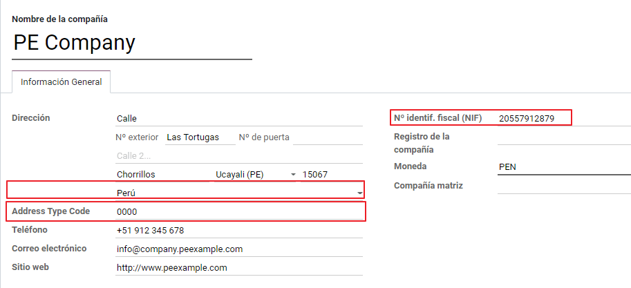
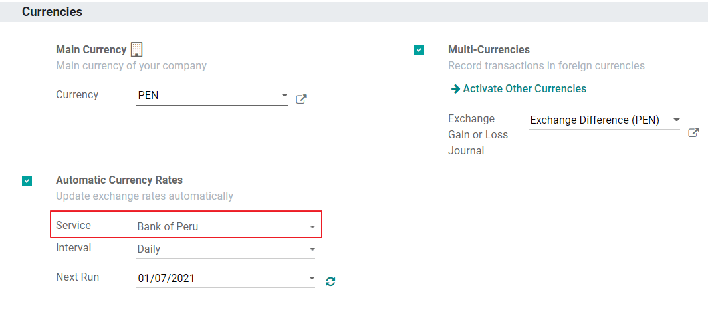
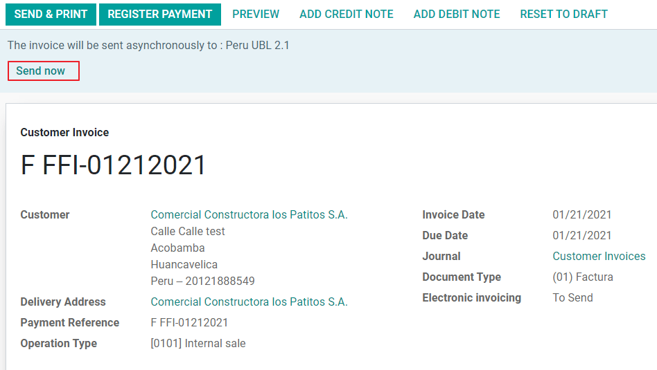
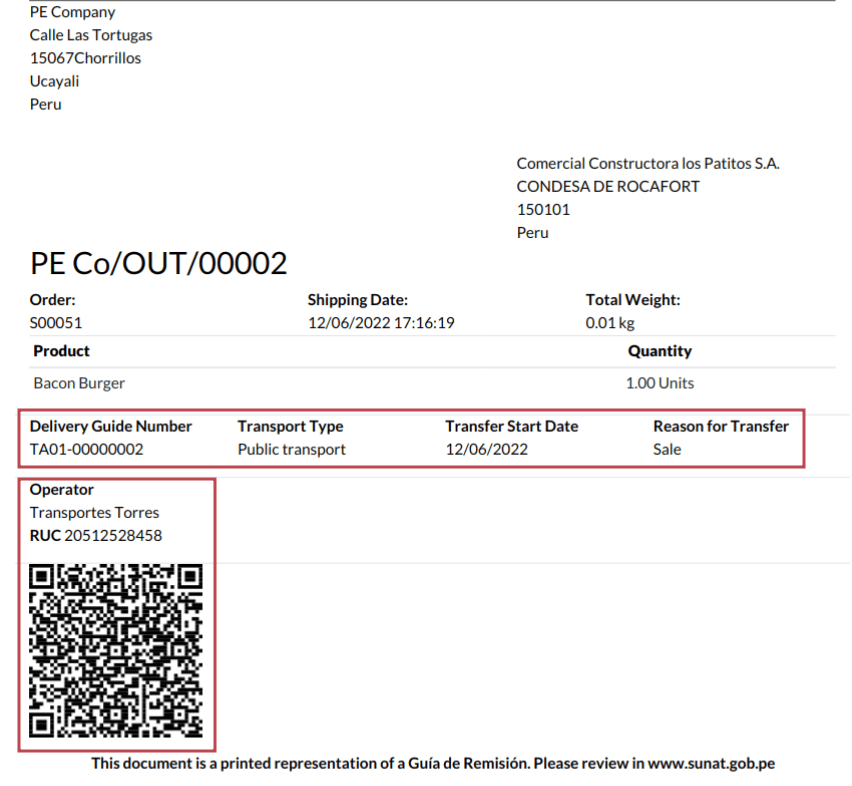

Perú¶
Introducción¶
Se mejoró y amplió la localización peruana, en esta versión están disponibles los siguientes módulos:
l10n_pe: agrega las funciones de contabilidad para la localización peruana, que representan la configuración mínima requerida para que una empresa opere en Perú bajo las regulaciones y lineamientos de la SUNAT. Los principales elementos incluidos en este módulo son: Plan de cuentas, impuestos y tipos de documentos.
l10n_pe_edi: incluye todos los requisitos técnicos y funcionales tanto para generar como validar facturas electrónicas, con base en las especificaciones de la SUNAT, en la cual se definen los lineamientos para crear y procesar documentos electrónicos válidos, para mayor detalle técnico puede acceder a las Especificaciones SUNAT, la cual lleva el control de nuevos cambios y actualizaciones. Las características de este módulo se basan en las resoluciones publicadas en la Legislación SUNAT.
Configuración¶
Instale los módulos de localización peruana¶
Vaya a Aplicaciones y busque Perú, luego haga clic en Instalar en el módulo Perú EDI. Este módulo tiene una dependencia con Perú - Contabilidad. En caso de que este último no esté instalado, Odoo lo instala automáticamente dentro de EDI.

Nota
Cuando instala una base de datos desde cero seleccionando Perú como país, Odoo instala automáticamente el módulo base: Perú - Contabilidad.
Configure su empresa¶
Además de la información básica en la empresa, necesitamos configurar Perú como país, esto es fundamental para que la factura electrónica funcione correctamente. El campo Código de tipo de dirección representa el código de establecimiento asignado por la SUNAT cuando las empresas registran su RUC (Registro Único de Contribuyente):
Truco
En caso de que se desconozca el código del tipo de dirección, puede establecerlo como el valor predeterminado: 0000. Tenga en cuenta que si se ingresa un valor incorrecto, la validación de la factura electrónica puede tener errores.
Nota
El NIF debe configurarse siguiendo el formato del RUC.
Plan de cuentas¶
El plan de cuentas se instala de forma predeterminada como parte del conjunto de datos incluido en el módulo de localización, las cuentas se mapean automáticamente en:
Impuestos
Cuentas por pagar predeterminadas.
Cuentas por cobrar predeterminadas
El plan de cuentas de Perú se basa en la versión más actualizada del PCGE, el cual se agrupa en varias categorías y es compatible con la contabilidad NIIF.
Opciones de Contabilidad¶
Una vez instalados los módulos y configurada la información básica de su empresa, es necesario configurar los elementos requeridos para la factura electrónica. Para ello, vaya a .
Conceptos básicos¶
A continuación le presentamos algunos términos que son esenciales en la localización peruana:
EDI: Intercambio Electrónico de Datos, el cual en este contexto se refiere a la factura electrónica.
SUNAT: La Superintendencia Nacional de Aduanas y de Administración Tributaria, el organismo que se encarga de las aduanas e impuestos en Perú.
OSE: Operador de Servicios Electrónicos, Definición de OSE por la SUNAT.
CDR: Es la constancia de recepción de la factura electrónica remitida a la SUNAT. En otras palabras, este archivo XML garantiza que la factura electrónica ha sido recepcionada por la SUNAT.
Credenciales SOL: SUNAT Operaciones en Línea. La SUNAT proporciona el usuario y contraseña, y otorga acceso a los sistemas de operaciones en línea.
Proveedor de firma digital¶
Como parte de los requisitos para la factura electrónica en Perú, su empresa debe seleccionar un proveedor de firma electrónica que se encargará del proceso de firma de documentos y gestionará la respuesta de validación de la SUNAT. Odoo ofrece tres opciones:
IAP (Compras dentro de la aplicación de Odoo)
Digiflow
SUNAT
Consulte las secciones a continuación para verificar los detalles y las consideraciones de cada opción.
IAP (Compras dentro de la aplicación de Odoo)¶
Esta es la opción predeterminada y sugerida, considerando que el certificado digital se incluye como parte del servicio.

¿Qué significa IAP?¶
Significa Compras dentro de la aplicación y es un servicio de firma electrónica ofrecido directamente por Odoo, el servicio se encarga del siguiente proceso:
Proporciona el certificado de factura electrónica, por lo que no necesita adquirir uno por su cuenta.
Envía el documento al OSE, en este caso, a Digiflow.
Recibe la validación del OSE y la CDR.
¿Cómo funciona?¶
El servicio requiere créditos para procesar sus documentos electrónicos. Odoo proporciona 1000 créditos gratis en nuevas bases de datos. Una vez consumidos estos créditos, debe comprar un paquete de créditos.
Créditos |
EUR |
|---|---|
1000 |
22 |
5000 |
110 |
10,000 |
220 |
20,000 |
440 |
Los créditos se consumen por cada documento que se envía al OSE.
Importante
Si tiene un error de validación y el documento debe enviarse una vez más, se cobrará un crédito adicional. Por lo tanto, es fundamental que verifique que toda la información sea correcta antes de enviar su documento al OSE.
¿Qué debe hacer?¶
En Odoo, una vez que se activa su contrato empresarial y comienza a trabajar en producción, debe comprar créditos una vez que se consuman los primeros 1000.
Digiflow es el OSE que se utiliza en el IAP, debe afiliarlo como el OSE oficial de su empresa en el sitio web de la SUNAT. Este es un proceso simple. Para obtener más información, consulte la Guía de afiliación de OSE.
Registre Digiflow como el PSE autorizado, consulte la Guía de afiliación de PSE.
Digiflow¶
Esta opción se puede utilizar como alternativa, en lugar de utilizar los servicios IAP, puede enviar la validación de su documento directamente a Digiflow. En este caso, debe considerar:
Comprar su propio certificado digital: Para obtener más detalles sobre la lista oficial de proveedores y el proceso para adquirirlo, consulte Certificados digitales de la SUNAT.
Firmar un contrato de servicio directamente con Digiflow.
Proporcionar sus credenciales SOL.
SUNAT¶
En caso de que su empresa quiera firmar directamente con la SUNAT, es posible seleccionar esta opción en su configuración. En este caso es necesario considerar: - Obtener la aceptación del proceso de Certificación SUNAT.
Comprar su propio certificado digital: Para obtener más detalles sobre la lista oficial de proveedores y el proceso para adquirirlo, consulte Certificados digitales de la SUNAT.
Proporcione sus credenciales SOL.
Importante
Al usar la conexión directa con la SUNAT, se debe establecer el usuario SOL con la empresa RUT + ID de usuario. Ejemplo: 20121888549JOHNSMITH
Entorno de prueba¶
Odoo proporciona un entorno de prueba que se puede activar antes de que su empresa entre en producción.
Al utilizar el entorno de prueba y la firma IAP, no es necesario que compre créditos de prueba para sus transacciones, ya que todas se validan de forma predeterminada.
Truco
De forma predeterminada, las bases de datos están configuradas para trabajar en producción, asegúrese de habilitar el modo de prueba si es necesario.
Certificado¶
En caso de que no utilice Odoo IAP, para generar la firma de factura electrónica, se requiere un certificado digital con la extensión .pfx . Acceda a esta sección y cargue su archivo y contraseña.

Multidivisa¶
El Banco Central de Reserva del Perú proporciona el tipo de cambio de divisa oficial. Odoo puede conectarse directamente a sus servicios y obtener el tipo de cambio de forma automática o manual.
Visite la siguiente sección de nuestra documentación para obtener más información acerca de multimonedas.
Configurar datos maestros¶
Impuestos¶
Como parte del módulo de localización, los impuestos se crean de forma automática con su cuenta financiera relacionada y la configuración de factura electrónica.

Configuración EDI¶
Como parte de la configuración de impuestos, hay tres nuevos campos requeridos para la factura electrónica, los impuestos creados de forma predeterminada tienen estos datos incluidos, pero en caso de que cree nuevos impuestos asegúrese de completar los campos:

Posiciones fiscales¶
Hay dos posiciones fiscales principales incluidas de forma predeterminada cuando instala la localización peruana.
Extranjero - Exportación: Establezca esta posición fiscal en clientes para transacciones de exportación.
Perú local: establezca esta posición fiscal en los clientes locales.
Tipos de documentos¶
En algunos países de América Latina, incluido Perú, algunas transacciones contables como facturas de cliente y facturas de proveedor se clasifican por tipos de documentos, definidos por las autoridades fiscales del gobierno, en este caso por la SUNAT.
Cada tipo de documento puede tener una secuencia única por diario donde se asigna. Como parte de la localización, el tipo de documento incluye el país en el que se aplica el documento, los datos se crean automáticamente cuando se instala el módulo de localización.
La información requerida para los tipos de documentos se incluye de forma predeterminada, por lo que el usuario no necesita completar nada en esta vista:

Advertencia
Actualmente, los documentos compatibles en las facturas de los clientes son: factura, boleta, nota de débito y nota de crédito.
Diarios contables¶
Al crear los diarios de ventas, se debe completar la siguiente información, además de los campos estándar:
Uso de documentos¶
Este campo se utiliza para definir si el diario utiliza tipos de documentos. Solo se aplica a los diarios de compras y ventas, que son los que se pueden relacionar con los diferentes tipos de documentos disponibles en Perú. De forma predeterminada, todos los diarios de ventas creados usan documentos.
Intercambio electrónico de datos¶
En esta sección se indica qué flujo de trabajo de EDI se utiliza en la factura, para Perú debemos seleccionar “Perú UBL 2.1”.

Advertencia
De forma predeterminada, el valor Factur-X (FR) siempre se muestra, asegúrese de deseleccionarlo manualmente.
Contacto¶
Tipo de identificación e IVA¶
Como parte de la localización peruana, los tipos de identificación definidos por la SUNAT ahora están disponibles en el formulario del partner, esta información es esencial para la mayoría de las transacciones ya sea en la empresa remitente y en el cliente, asegúrese de completar esta información en sus registros.

Producto¶
Además de la información básica en sus productos, para la localización peruana, se debe configurar el valor requerido del código UNSPC en el producto.

Uso y prueba¶
Factura de cliente¶
Elementos EDI¶
Una vez que haya configurado sus datos principales, las facturas se pueden crear desde sus ordenes de ventas o manualmente. Además de la información básica de la factura descrita en nuestra página acerca del proceso de facturación, hay otros campos requeridos como parte del EDI para Perú.
Tipo de documento: el valor predeterminado es «Factura electrónica», pero puede cambiar manualmente el tipo de documento si es necesario y seleccionar Boleta, por ejemplo.

Tipo de operación: este valor es obligatorio para la factura electrónica e indica el tipo de transacción, el valor predeterminado es «Venta interna» pero se puede seleccionar otro valor manualmente cuando sea necesario, por ejemplo Exportación de bienes.

Motivo de Afectación del EDI: En las líneas de la factura, además del impuesto hay un campo “Motivo de afectación del EDI” que determina el alcance del impuesto con base en la lista de la SUNAT que se despliega. Todos los impuestos cargados de forma predeterminada están asociados con un motivo de afectación del EDI predeterminado y, si es necesario, puede seleccionar manualmente otro al crear la factura.
Validación de la factura¶
Una vez que verifique que toda la información en su factura es correcta, puede proceder a validarla. Esta acción registra el movimiento de la cuenta y activa el flujo de factura electrónica para enviarla a la OSE y la SUNAT. El siguiente mensaje se muestra en la parte superior de la factura:

Asincrónico significa que el documento no se envía automáticamente después de que se haya contabilizado la factura.
Estado de factura electrónica¶
Por enviar: Indica que el documento está listo para ser enviado al OSE. Odoo puede hacer esto de forma automática a través de un cron que se ejecuta cada hora o el usuario puede enviarlo inmediatamente al hacer clic en el botón “Enviar ahora”.
Enviado: Indica que el documento se envió al OSE y se validó con éxito. Como parte de la validación, se descarga un archivo ZIP y se registra un mensaje en el chatter que indica que la validación gubernamental es correcta.

En caso de que exista un error de validación, el estado de la factura electrónica permanece en “Por enviar” para que se puedan realizar las correcciones y la factura se pueda enviar nuevamente.
Advertencia
Se consume un crédito cada vez que envía un documento para su validación, en este sentido si se detecta un error en una factura y la envía una vez más, se consumen dos créditos en total.
Errores comunes¶
Hay varias razones detrás de un rechazo por parte del OSE o la SUNAT. Cuando esto sucede, Odoo envía un mensaje en la parte superior de la factura que indica los detalles del error y, en los casos más comunes, una pista para solucionar el problema.
Si se recibe un error de validación, tiene dos opciones:
En caso de que el error esté relacionado con datos maestros del partner, cliente o impuestos, simplemente puede aplicar el cambio en el registro (por ejemplo, el tipo de identificación de cliente) y una vez hecho esto, haga clic en el botón «Reintentar».
Si el error está relacionado con algunos datos registrados en la factura directamente (tipo de operación, datos faltantes en las líneas de factura), la solución correcta es restablecer la factura a borrador, aplicar los cambios y luego enviar la factura nuevamente a la SUNAT para otra validación.

Para obtener más detalles, consulte Errores comunes en SUNAT.
Reporte de facturas en PDF¶
Una vez que la SUNAT acepta y valida la factura, se puede imprimir el reporte en PDF de la factura. El reporte incluye un código QR, que indica que la factura es un documento fiscal válido.

Créditos IAP¶
El IAP electrónico de Odoo ofrece 1000 créditos de forma gratuita. Una vez que estos créditos se consumen en su base de datos de producción, su empresa debe comprar nuevos créditos para procesar sus transacciones.
Una vez que se quede sin créditos, se mostrará una etiqueta roja en la parte superior de la factura que indica que se requieren créditos adicionales, puede comprarlos fácilmente ingresando al enlace que se proporciona en el mensaje.

En el servicio IAP se incluyen paquetes con diferentes precios en función de la cantidad de créditos. La lista de precios en el IAP siempre se muestra en EUR.
Casos de uso especiales¶
Proceso de cancelación¶
Algunos escenarios requieren la cancelación de una factura, por ejemplo, cuando se creó una por error. Si la factura ya se envió y la SUNAT la validó, la forma correcta de proceder es hacer clic en el botón «Solicitar cancelación»:

Para cancelar una factura, proporcione un motivo de cancelación.
Estado de factura electrónica¶
Por cancelar: Indica que la solicitud de cancelación está lista para enviarse a la OSE, Odoo puede hacer esto de forma automática mediante un cron que se ejecuta cada hora, o el usuario puede enviarlo inmediatamente al hacer clic en el botón «Enviar ahora». Una vez que se envía, se crea un ticket de cancelación, como resultado, el siguiente mensaje y el archivo CDR se registran en el chatter:

Cancelada: indica que la solicitud de cancelación se envió al OSE y se validó con éxito. Como parte de la validación, se descarga un archivo ZIP y se registra un mensaje en el chatter que indica la validación gubernamental correcta.

Advertencia
Se consume un crédito en cada solicitud de cancelación.
Proceso de cancelación¶
Al crear facturas de exportación, tenga en cuenta las siguientes consideraciones:
El tipo de identificación de su cliente debe ser una identificación extranjera.
El tipo de operación en su factura debe ser de exportación.
Los impuestos incluidos en las líneas de la factura deben ser impuestos EXP.

Anticipos¶
Cree la factura de anticipo y aplique su pago relacionado.
Cree la factura final sin considerar el anticipo.
Cree una nota de crédito para la factura final con el importe del anticipo.
Concilie la nota de crédito con la factura final.
El balance restante de la factura final debe pagarse con una transacción de pago regular.
Facturas sujetas a detracción¶
Al crear facturas sujetas a detracciones, tome en cuenta las siguientes consideraciones:
Todos los productos incluidos en la factura deben tener configurados estos campos:

El tipo de operación en su factura debe ser
1001
Notas de crédito¶
Cuando se necesita una corrección o reembolso sobre una factura validada, se debe generar una nota de crédito. Para esto simplemente haga clic en el botón «Agregar nota de crédito», una parte de la localización peruana necesita probar un motivo de crédito seleccionando una de las opciones en la lista.

Truco
Al crear su primera nota de crédito, seleccione el método de crédito: Reembolso parcial, esto le permite definir la secuencia de la nota de crédito.
De forma predeterminada, la nota de crédito se establece en el tipo de documento:

Para terminar el flujo de trabajo, siga las instrucciones de nuestra página sobre notas de crédito.
Nota
El flujo de trabajo EDI para las notas de crédito funciona de la misma manera que las facturas.
Notas de débito¶
Como parte de la localización peruana, además de crear notas de crédito a partir de un documento existente, también puede crear notas de débito. Para ello, utilice el botón «Agregar nota de débito».
De forma predeterminada, la nota de débito se establece en el tipo de documento.
Guía de entrega electrónica 2.0¶
La Guía de Remisión Electrónica (GRE) es un documento electrónico que el transportista genera para ayudar al transporte o transferencia de bienes de un lugar a otro, como un almacén u otro establecimiento. En Odoo es necesario seguir varios pasos de configuración antes de poder usar esta función.
El uso del documento guía de remisión electrónica es obligatorio para los contribuyentes de SUNAT que necesitan transferir sus productos, excepto aquellos que estén bajo el Régimen único simplificado (RUS).
Tipos de guía de remisión¶
Remitente¶
El tipo de guía de remisión Remitente se emite cuando se hace la venta, se brinda un servicio (incluyendo el procesamiento), los bienes ya se asignaron para su uso, o los bienes ya se transfirieron entre establecimientos de la misma empresa u otras empresas.
El dueño de los bienes (es decir, el remitente) es quien emite la guía de remisión al inicio del envío. La guía de envío de remitente es compatible con Odoo.
Ver también
Transportista¶
El tipo de guía de remisión Transportista justifica el servicio de transporte que el transportista realiza.
Esta guía de remisión la emite el transportista y se debe emitir a cada remitente cuando el envío pasa por transporte público.
Importante
La guía de remisión - remitente no es compatible con Odoo
Ver también
Tipos de traslado¶
Privado¶
La opción de tipo de transporte privado se usa cuando el dueño transfiere bienes usando sus propios vehículos. En este caso, se debe emitir la guía de remisión remitente.
Público¶
La opción de tipo de transporte público se usa cuando un transportista externo se encarga de mover los bienes. En este caso, las dos guías de remisión deben de emitirse: la guía de remisión remitente y la guía de remisión transportista.
Envío directo a la SUNAT¶
La GRE de Odoo se debe enviar directamente a la SUNAT, sin importar el proveedor del documento: IAP, Digiflow o SUNAT.
Información requerida¶
La versión 2.0 de la guía de remisión requiere información adicional en la configuración general, vehículos, contactos y productos. En la configuración general es necesario agregar las nuevas credenciales que puede obtener desde el portal de la SUNAT.
Dar de baja¶
Tanto el remitente como el transportista pueden dar de baja la carta porte electrónica siempre y cuando se cumplan las siguientes condiciones:
No se ha iniciado el envío.
Si ya se inició el envío, se le tendrá que cambiar al destinatario antes de llegar al destino final
Importante
Para cancelaciones la SUNAT ahora usa el término «dar de baja» y no «anular».
Prueba¶
La SUNAT no es compatible con entornos de prueba. Esto significa que las guías de remisión que se generen por error se enviarán a la SUNAT.
Si se creó una carta porte por error en este entorno, es necesario borrarla del portal de la SUNAT.
Configuración¶
Importante
Por ahora la única carta porte compatible con Odoo es la GRE.
La guía de remisión depende de la aplicación Inventario de Odoo y de los módulos l10n_pe_edi y l10n_pe.
Se debe agregar un segundo usuario para la creación de documentos electrónicos.
Después de seguir los pasos para configurar la facturación electrónica y los datos maestros, instale el módulo Perú - Nota de entrega electrónica 2.0 (l10n_pe_edi_stock_20).
Ahora debe obtener la ID de cliente y secreto de cliente de la SUNAT. Para hacerlo, siga las instrucciones en el manual de servicios web plataforma nueva GRE.
Nota
En el portal de la SUNAT es importante tener activados los derechos de acceso correctos, ya que pueden diferir de los permisos configurados para el usuario de la facturación electrónica.
Estas credenciales se deben usar para configurar los ajustes generales de la guía de remisión de .

Nota
Se requiere seguir el formato RUC + UsuarioSol (por ejemplo, 20557912879USUARIOSOL) para el campo Guía de usuario SOL, dependiendo del usuario seleccionado al generar las credenciales API GRE en el portal del SUNAT.
Operador¶
El operador es el conductor del vehículo en los casos en los que la guía de remisión sea a través de transporte privado.
Para crear un nuevo operador vaya a y llene la información de contacto.
Primero, seleccione Individual como tipo de empresa. Después agregue la Licencia del operador en la pestaña de Contabilidad en el formulario de contacto.
Para la dirección del cliente, asegúrse de llenar los siguientes campos:
Distrito
DNI/RUC
DNI/RUC

Transportista¶
El transportista se usa cuando la guía de remisión se hará mediante transporte público.
Para crear un transportista nuevo, vaya a y llene la información de contacto
Primero, seleccione Empresa como tipo de empresa. Después, agregue guilabel:Número de registro MTC, Entidad que emite la autorización y el Número de autorización.
Para la dirección de la empresa, asegúrese de llenar los siguientes campos:
Distrito
DNI/RUC
DNI/RUC

Vehículos¶
Para configurar los vehículos disponibles, vaya a y llene el formulario de vehículos con la información necesaria para cada vehículo:
Nombre del vehículo
Matrícula
¿Es M1 o L?
Entidad emisora de la autorización especial
Número de autorización
Operador predeterminado
Empresa
Importante
Es importante marcar la casilla de verificación ¿Es M1 o L? si el vehículo tiene menos de cuatro ruedas u ocho asientos.

Productos¶
Para configurar los productos disponibles, vaya a y abra el producto que configurará.
Asegúrese de que la información aplicable en el formulario del producto está completamente configurada. El campo Partida Arancelaria debe llenarse.
Generar una GRE¶
Una vez que se crea la entrega desde el inventario durante un flujo de trabajo de ventas, asegúrese de completar los campos GRE en la sección superior derecha del formulario de transferencia para los campos:
Tipo de transporte
Razón de la transferencia
:guilabel:`Fecha de inicio del transporte `
También es necesario llenar los campos Vehículo y Operador en la pestaña Guia de Remision PE.
La transferencia de entrega se debe marcar como Lista para que aparezca el botón Generar Guia de Remision en el menú izquierdo del formulario de transferencia.

Ya que la SUNAT haya validado el formulario de transferencia, el archivo XML generado estará disponible en el chatter. Puede imprimir el albarán de entrega que muestra los detalles de transferencia y el código QR que la SUNAT validó.
Errores comunes¶
Diferente prefijo para productos (T001 en algunos, T002 en otros)Por el momento, Odoo no es compatible con la automatización de prefijos para productos. Esto se puede hacer de manera manual para cada producto, además de que también se puede hacer para productos no almacenables. Sin embargo, tome en cuenta que no habrá trazabilidad.
2325 - MedidaPesoBruto - El dato no cumple con el formato establecido "Hace falta el campo" "Peso"" en el productoEste error ocurre cuando el peso del producto se configura a
0.00. Para arreglar esto necesita cancelar la carta porte y volverla a crear. Asegúrese de arreglar el peso en el producto antes de crear una nueva carta porte, o tendrá el mismo error.JSONDecodeError: Esperando valor: línea 1 columna 1 (char 0) al crear una Guía de EntregaEste error se genera debido a problemas con el usuario SOL. Verifique la conexión del usuario con la SUNAT; el usuario SOL debe establecerse con la empresa RUT + ID del usuario. Por ejemplo,
2012188549JUANPEREZ.El número de documento relacionado al traslado de mercancía no cumple con el formato establecido: error: documento relacionadoLos campos tipo de documento relacionado y el número de documento relacionado solo se aplican en facturas y recibos.
400 Error del cliente: solicitud de URL malaEste error no se puede solucionar desde Odoo, le recomendamos que se ponga en contacto con la SUNAT para verificar el usuario. Es posible que necesite crear un usuario nuevo
Se ha encontrado un contenido no válido que empieza por el elemento 'cac:BuyerCustomerParty'Este error ocurre cuando el motivo de transferencia se configura como otro. Seleccione otra opción. Siguiendo la documentación oficial de la guía de albaranes de SUNAT, los motivos de transferencia 03 (venta con envío a terceros) o 12 (otros) no funcionan en Odoo, ya que no se debe tener un cliente vacío o en blanco.
Duda cliente: consumo de créditos IAP al usar GRE 2.0Para clientes que usan compras dentro de la aplicación, en teoría no se consumen créditos, ya que no pasa por OSE, es decir, estos documentos se envían directamente a la SUNAT.
Errores con formato credenciales GRE 2.0 (traceback error)Odoo envía un error con rastreo en lugar de un mensaje en el que se indica que las credenciales no se configuraron correctamente en la base de datos. Si esto ocurre en su base de datos, verifique sus credenciales.